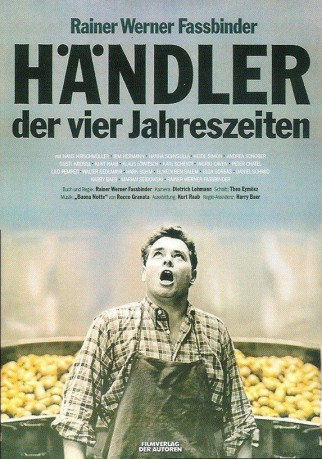
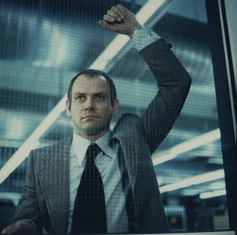

#8055 Händler der vier Jahreszeiten
 
 IMDB-Wertung: 7.5 / 10
IMDB-Wertung: 7.5 / 10  Metascore: 0
Metascore: 0 
Seit Hans Epp aus der Fremdenlegion heimgekehrt ist, findet er sich in seinem alten Leben nicht mehr zurecht. Den hohen Ansprüchen seiner Mutter kann er nicht genügen, seinen Job als Polizist muss er quittieren, als er sich mit einer Prostituierten einlässt. Schließlich schlägt er sich als Obsthändler durch. In der Gesellschaft zur Zeit des Wirtschaftswunders findet er jedoch keinen Halt. Obwohl der Obsthandel floriert, gibt sich Hans seiner selbstzerstörerischen Resignation hin.
Jahr: 1972
Dauer: 88 Minuten
FSK: 18
Land: West-Deutschland Studio: Filmverlag der AutorenTonspuren:
Untertitel:
Auflösung: 1080p (1488x1080) Größe: 7833 MB
Genre: Drama
Regisseur: Rainer Werner Fassbinder
Drehbuch: Rainer Werner Fassbinder
Soundtrack:
Darsteller:
 Hans Hirschmüller als Hans Epp / Husband
Hans Hirschmüller als Hans Epp / Husband Irm Hermann als Irmgard Epp / Wife
Irm Hermann als Irmgard Epp / Wife Hanna Schygulla als Anna Epp / Hans's single sister
Hanna Schygulla als Anna Epp / Hans's single sister-  Klaus Löwitsch als Harry Radek / 2nd salesman
- Andrea Schober als Renate Epp / Hans's daughter
 Ingrid Caven als Hans's great love
Ingrid Caven als Hans's great love Kurt Raab als Kurt / Heide's husband
Kurt Raab als Kurt / Heide's husband- Peter Chatel als Dr. Harlach
- Elga Sorbas als Marile / The whore
 El Hedi ben Salem als The Arab
El Hedi ben Salem als The Arab- Marian Seidowsky als
- Daniel Schmid als 1st Candidate
 Harry Baer als 2nd Candidate
Harry Baer als 2nd Candidate Rainer Werner Fassbinder als Zucker / Hans's friend (uncredited)
Rainer Werner Fassbinder als Zucker / Hans's friend (uncredited) Jürgen Prochnow als Mann Am Stammtisch / Man at the Meeting Table (uncredited)
Jürgen Prochnow als Mann Am Stammtisch / Man at the Meeting Table (uncredited) Karl Scheydt als Anzell / Irmgard's lover
Karl Scheydt als Anzell / Irmgard's lover- Gusti Kreissl als Mother Epp
- Heide Simon als Heide / Hans's married sister
- Lilo Pempeit als Customer
- Walter Sedlmayr als Fruit cart salesman
- Michael Fengler als Playboy
- Hark Bohm als Chief Policeman
- Peter Gauhe als Kurt (uncredited)
- Sigi Graue als Mann am Stammtisch / Man at the meeting table (uncredited)
Datei: X:\FSK18-1900-1999\Händler der vier Jahreszeiten (1972, FSK18, 1488x1080).mkv seit 19.01.2018
Festplatte: FSK18
 Es gibt insgesamt 108 Filme in der Gruppe 'FSK18-1900-1999'
Es gibt insgesamt 108 Filme in der Gruppe 'FSK18-1900-1999'